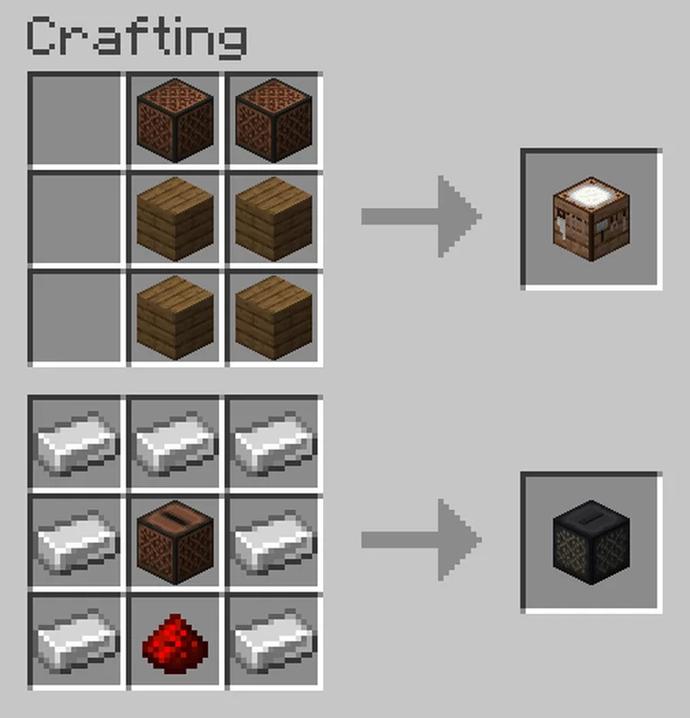

Instruments
This feature was actually made by Deesaster on Planet Minecraft.
This feature is only interesting to those who know how to play musical instruments. So we won't go into huge detail, but here's a rundown.
Craft the workbench(pictured top) and use it to make an instrument, have the specified resources in your inventory.
Hold the instrument and right click the notes in the air and the cooresponding note will play.
For orchesta string instruments, you must also craft a bow. Place the instrument in your off hand and the bow in your main hand.
For electric instruments, you must craft an amp (pictured bottom) and have it within 10 blocks of you while you play the instrument.
